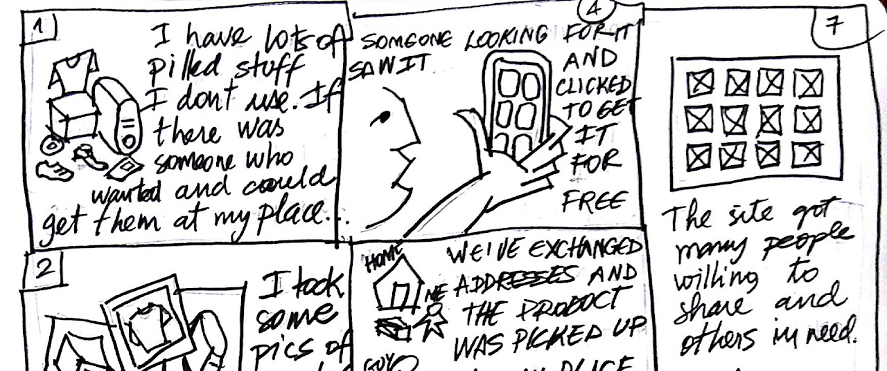
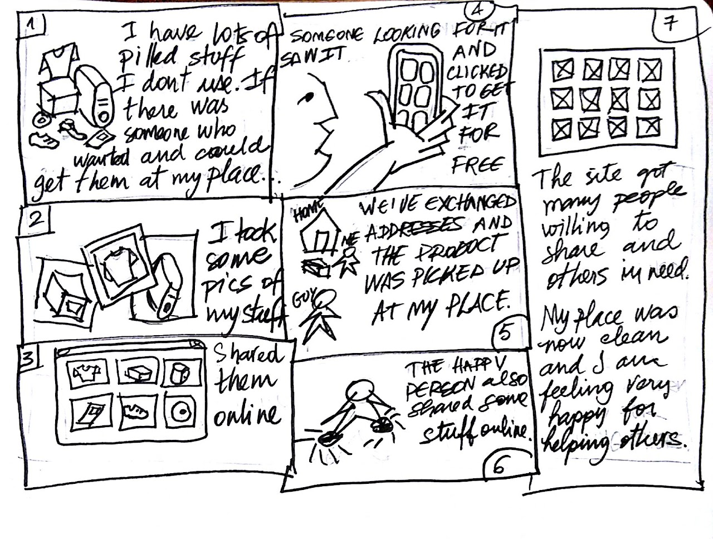
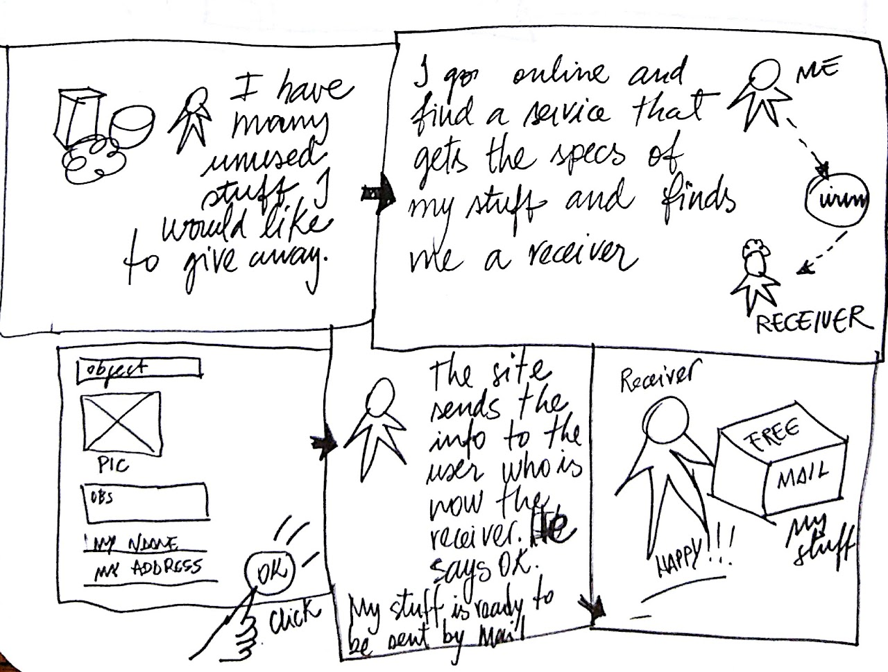
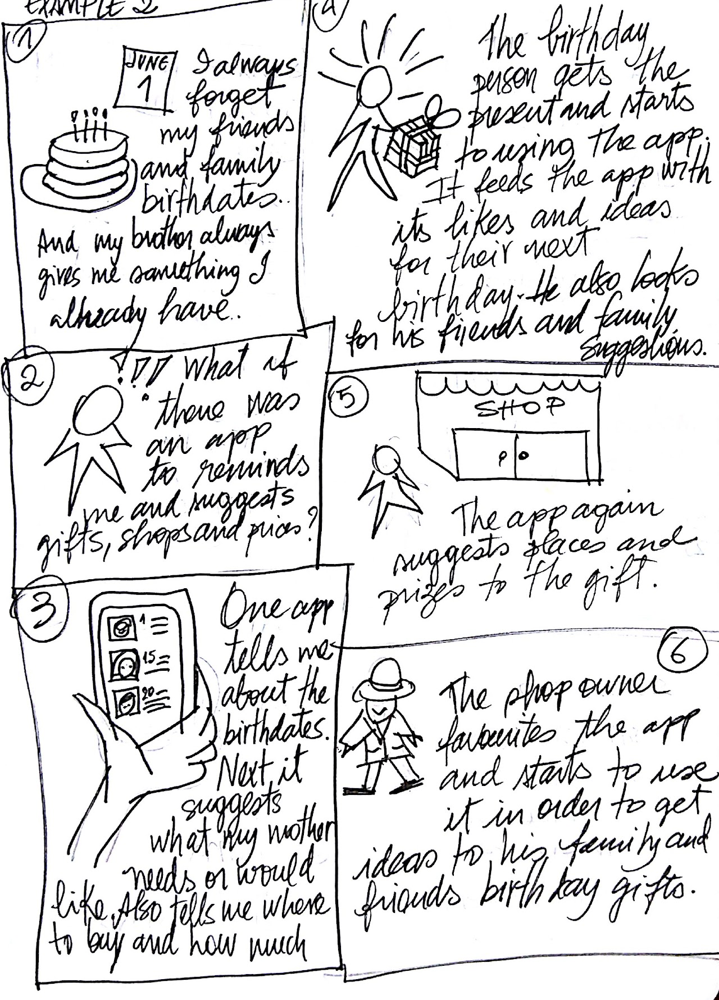
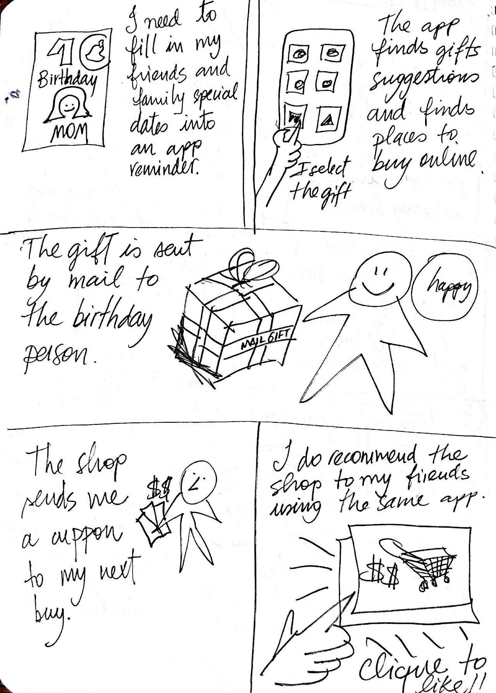
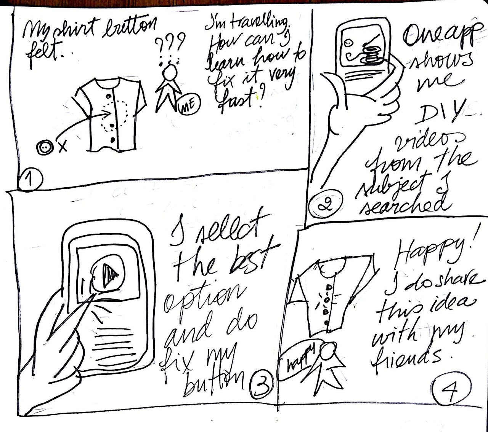
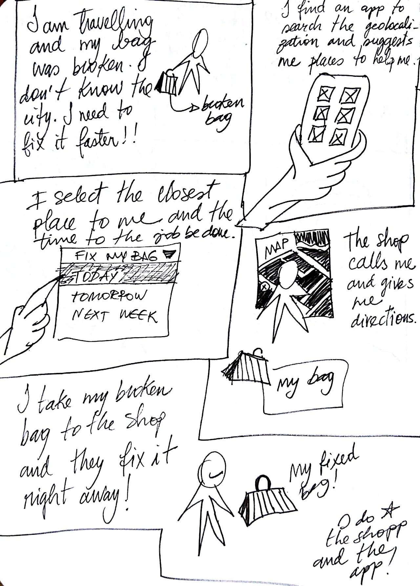

Ideação com storyboards
A ideação é uma parte muito importante do processo de design para desenvolver qualquer tipo de produto (aqui, considero um serviço também um produto). Em 2016, participei de um curso de Design Centrado no Humano, do Coursera, ministrado pelo professor Scott Kelman. Um dos trabalhos que fiz, foi focado em criar novas ideias para resolver problemas.
Lá falamos sobre storyboards. Um storyboard apresenta um cenário que leva um usuário hipotético da configuração à satisfação. Um cenário pode ser um problema, necessidade ou desejo embutido em uma situação específica e a satisfação pode ser um resultado alcançado por meio de um projeto que aborda o problema, a necessidade ou o desejo.
Os storyboards podem ser usados para mostrar o que um design permite que o usuário realize sem especificar uma interface de usuário específica. E um bom storyboard começa apresentando o problema: o que o usuário busca fazer? Em seguida, os painéis subsequentes percorrem o que o usuário faz. Ele apresenta como o usuário começa a usar o sistema, qualquer exploração que ele faça e como o design ajuda o usuário a atingir seu objetivo.
O desenho é muito usado no processo de storyboard porque ajuda o designer a focar mais na ideia do que no resultado visual. Mas, como não sou uma desenhista muito boa (até tento), criar ideias de design usando ilustrações foi um desafio. Mas eu corro pra abraçar um desafio!
O trabalho
Nosso trabalho era criar 3 ideias de design para as quais gostaríamos de fazer storyboard. O primeiro passo do processo deveria ser um brainstorming de uma longa lista de ideias. Destas, três deveriam ser selecionadas para o próximo passo.
Para cada ideia, deveríamos pensar em 2 storyboards para tarefas alternativas ou usuários alternativos. Isso significa que, no total, 6 storyboards exclusivos serão criados.
Cada storyboard deveria incluir de 5 a 8 painéis e caber em duas folhas de papel A4. Proibido usar computador; storyboards deveriam ser desenhados à mão. A qualidade da ilustração não seria avaliada. O objetivo era o conteúdo centrado no ser humano. Além disso, não havia a necessidade de um desenho muito detalhado.
A sequência do storyboard deveria demonstrar as principais etapas/elementos que uma interface precisaria cumprir.
O processo
Como era para ser um storyboard, não havia necessidade de desenhos muito detalhados. Entretanto, é importante que sejam feitos com um pincel ou caneta preta, com traços fortes o suficiente para permitir uma boa foto ou digitalização. Usei um pincel preto de ponta média para os desenhos.
Depois de alguma consideração e listando várias ideias, as três que escolhi foram:
IDEIA 1 Doações de objetos.
IDEIA 2 Lembrete de aniversários.
IDEIA 3 Conserte você mesmo.
Ideia 1: Doações de objetos

Problema: Maria é uma professora que compra muitos produtos, mas não usa tudo. Ela gostaria de encontrar pessoas interessadas nos objetos e fazer doações para ganhar espaço em casa.
Alternativa 1: Um aplicativo que pudesse encontrar pessoas interessadas em receber doações, para que elas pudessem buscá-las no endereço combinado, ou talvez enviá-las via endereço postal gratuitamente.

Alternativa 2: É a mesma ideia, mas com uma forma diferente de alcançar os resultados. Em vez de trocar endereços, as pessoas faziam um anúncio on-line e uma assinatura para receber o material gratuitamente.
Ideia 2: Lembrete de aniversários

Problema: Eu costumo esquecer os aniversários dos amigos e pessoas importantes. Simplesmente não há espaço na minha cabeça pra tanta informação.
Alternativa 1: Um aplicativo para me lembrar o aniversário, sugerir presentes, lojas e preços.

Alternativa 2: Nesta outra versão, o aplicativo me lembraria de datas especiais, não apenas aniversários. Também me sugeriria presentes recebendo ideias dos interesses da outra pessoa e comentários sociais que ela fez. As lojas, preços e compras seriam todos configurados online e o presente seria enviado pelo correio. No final, eu receberia cupons gratuitos da loja online se o recomendasse a outros usuários.
Ideia 3: Conserte você mesmo

Problema: José é um estudante universitário que adora fazer e consertar suas próprias coisas, porque ele precisa economizar dinheiro, mas perde muito tempo na web procurando instruções DIY.
Alternativa 1: Um aplicativo que encontra e sugere vídeos da web para ajudar José a consertar algo quebrado. Como um botão caído de sua camisa, por exemplo.

Problema: Marcos é um gerente que viaja muito e às vezes precisa fazer pequenos consertos.
Alternativa 2: Encontre um reparador perto de você. Este aplicativo ajudaria os viajantes / não viajantes a encontrar um lugar para consertar uma coisa quebrada e sugerir o mais próximo e mais barato.
LIÇÕES APRENDIDAS
Eu tive muitas dificuldades com as coisas desenhadas. Talvez se houvesse mais tempo, talvez tivesse feito melhor, com um roteiro escrito de cada etapa do processo.
Repetir o processo, certamente traria mais clareza para cada ideia.
O desapego dos detalhes dos desenhos foi libertador. Pensar na funcionalidade do app, ao mesmo tempo que pensava em como explicar isso por meio de uma ilustração, transformou minha forma de pensar em problemas e soluções. Fez com que a ideia tivesse que ser simplificada para que eu própria fosse capaz de desenhá-la.
Com a necessidade gráfica de resumir minhas ideias, fiquei bastante presa em cada uma delas. Mas ei! Isso faz parte do processo de storyboard, certo?